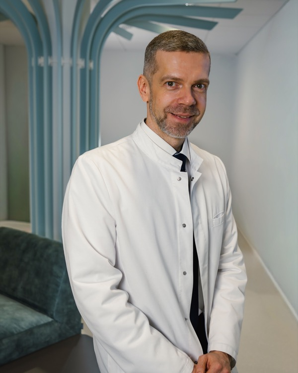
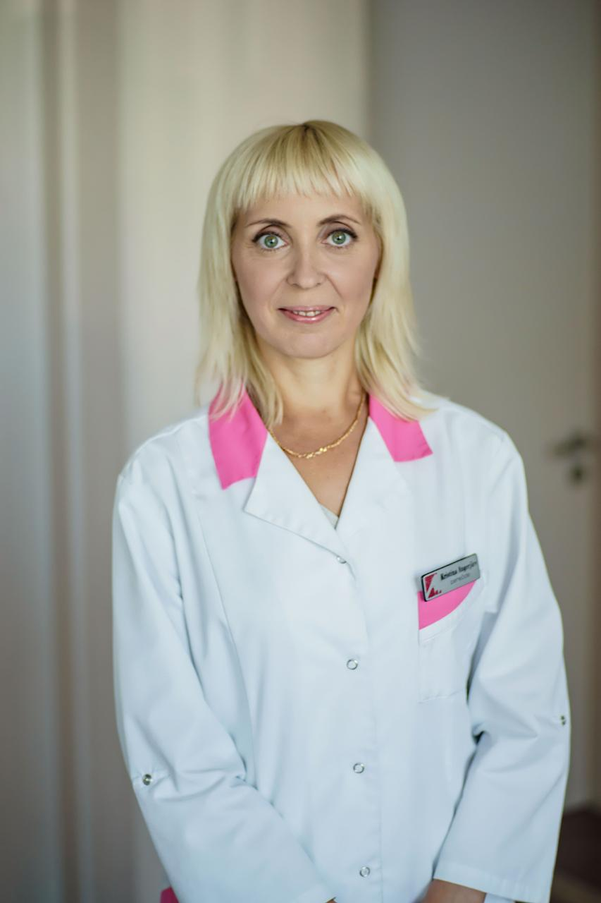

Operatiivne ühendus
Digikanal, telefon. Mitte ainus külaskäik aastas.
Alustatud 1993
Dr. Sven Lindström ja Dr. Reet Lindström asutasid SL Meedikat, rajades aluse usaldusele ja personaalsele arstiabile. Dr. Ingmar Lindström jätkab seda pärandit — üle kolmekümne aasta, kus arsti ja patsiendi suhe määrab tervishoolu tähtsuse.
Dr. Sven Lindström
Asutaja, 1993
Dr. Reet Lindström
Asutaja, 1993
")
Dr. Ingmar Lindström
Kliiniku juht, täna
Teie arst teab teie ajalugu. Teie allergiaid. Teie perekonnaanamnest. Ei ole ravi ilma suheta.
Digikanal, telefon. Mitte ainus külaskäik aastas.
Krooniliste haiguste juhtimisest kuni kriisini.
Pole kiiruse survet. Teie arsti täielik tähelepanu.
Üld- ja sisehaiguste arst, asutaja (1993)
SL Meedikat kaasasutanud. 30+ aasta perekondlikku arstitöö ja usalduse ajaloo rajaja.
TallinnNaistearst, asutaja (1993)
SL Meedikat kaasasutanud. Naiste tervise spetsialist ja personaalse hoole eestkostja.
Tallinn
Arst, kliiniku juht
Jätkab isa ja ema pärandit. 20+ aasta kogemus perearsitöös ja sisehaigetustes.
TallinnGünekoloog
Naiste tervise spetsialist. Reproduktiivne tervis, ennetamine, hooldus.
Tallinn
Peavõde
Meeskonna koordinaator. Patsiendi esimene kontakt, hooldamise juht.
TallinnLastearst
Laste tervise spetsialist. Areng, vaktsineerimine, pere-alane tervishoidu.
TallinnIga otsus algab mõistmisest.
Põhinõudlus, enda arsti perspektiivilt kirjutatud.
Põhinõudlus, enda arsti perspektiivilt kirjutatud.
Põhinõudlus, enda arsti perspektiivilt kirjutatud.
Vali sobiv aeg ja teenus. Iga külaskäik algab usaldusest.
Küsimused? Meiega on lihtne ühendust võtta — personaalne suhtlus algab siin.
Aadress
Pärnu maantee 48
11624 Tallinn, Eesti
Telefon
+372 6 316 316
E-post
info@slmeedik.ee
Registrikood: 10159121
Meditsiinilitsents: L07470
Jõudlusvõimekus
Esmaspäevast reedeni 09:00–17:00
Aeg broneerida otse süsteemis või telefoni teel.